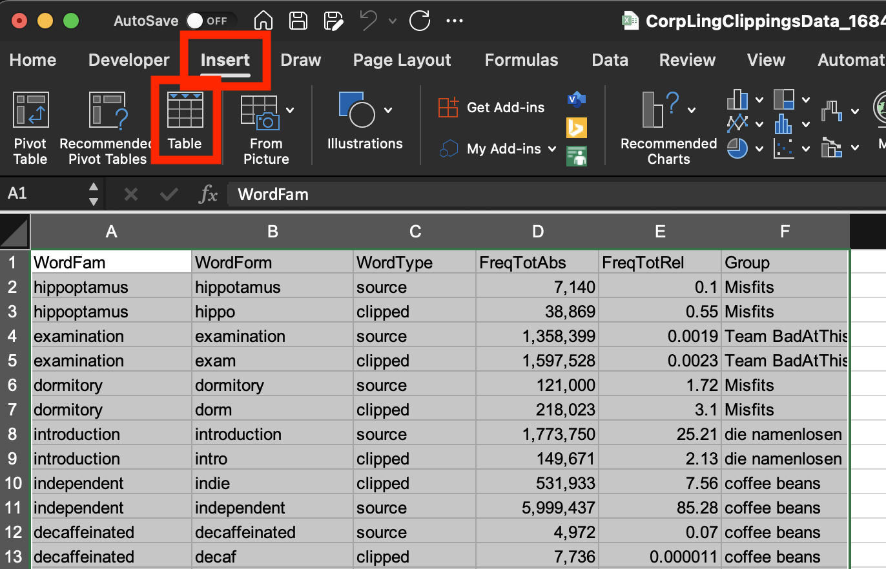
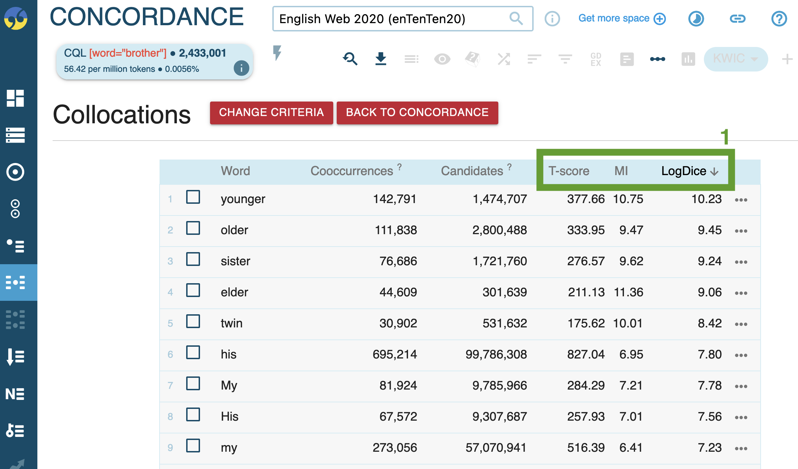
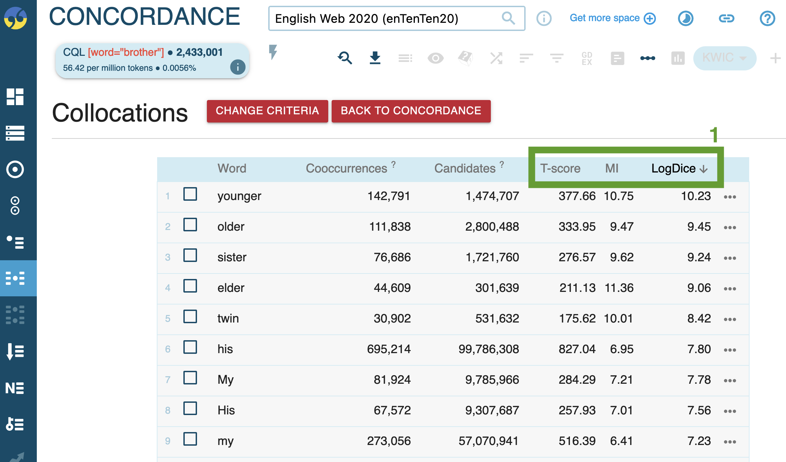

Morphology and word-formation
1 Fundamentals
- morphology vs word-formation
 (Schmid 2016: 15)
(Schmid 2016: 15)
2 Word-formation processes
2.1 Overview
2.2 Morphemic word-formation

2.3 Non-morphemic word-formation
- overview
- characteristics


3 Practice: Word-formation analysis
Analyze the word-formation processes involved in the following complex words:
- childhood
- paperback
- study-bedroom
- foreigner
- paleface
- Oxbridge
- CGEL
- fridge
Example: morphological stemma of disclaimers
4 A corpuslinguistic study of clipping (Hilpert 2023)
4.1 Theoretical framework
- Alternative view in previous work: no difference in meaning between source words and clipped forms.
- Authors’ framework (Hilpert 2023):
- Principle of No Synonymy: differences in form imply differences in meaning or use.
- Usage-based approach: meaning is derived from usage.
- Distributional hypothesis: words that occur in similar contexts tend to have similar meanings.
4.2 Data and method
- Dataset of clippings:
- Corpus data from large web corpora.
- Method:
- Analysing meaning based on:
- Collocations
- Word embeddings
- Investigating variation across text types and semantic differences.
- Analysing meaning based on:
5 Practice: Corpus-based analysis of clippings
5.1 Using Sketch Engine
In the enTenTen21 corpus:
- determine frequency for source words and clipped forms
- example:
[lemma="brother" & tag="N.*"] - record absolute and relative frequency
5.2 Data analysis and visualisation in Excel
- Collect results in our collaborative spreadsheet
- Make a local copy of the sheet.
- Analyse results:
- Insert
Tablefor range of data.- 
- Insert
Pivot TableforTable. - Set
Rows,Values, andColumns.
- Remove
Grand Totalby right-click → remove.
- Insert
Pivot Chart.
- Insert


5.2.1 Potential further analyses for clippings
- In the English Trends (2014–today) corpus:
- analyze frequency over time
- identify patterns of usage
- Are there differences in usage across text types? (e.g. using COCA or enTenTen)
- Studying long-term diachronic trends using english-corpora.org:
- NOW corpus (News on the Web)
- COCA (Corpus of Contemporary American English)
6 Further Study: Semantic Analysis of Clippings with Sketch Engine
6.1 Studying semantics using collocations
6.1.1 Retrieving occurrences
- Run a query to retrieve all occurrences and get a concordance view (e.g.,
[word="brother"]). - Click on the collocation analysis icon.

6.1.2 Running collocation analysis
- Configure the analysis:

- Specify context window range (words to the left/right).
- Select statistical measures.
- Results:
- 
- Examine statistical measures for collocates.
- 
6.2 Studying semantics using word sketches
6.2.1 Word sketch for single forms
- Generate a word sketch (e.g., for bro).

- Specify word class if necessary.
- Results provide syntactic contexts:

- Visualise results using the built-in tool.
- Visualise results using the built-in tool.

6.2.2 Word sketch comparison
- Compare the source word (e.g., brother) with the clipped form (e.g., bro).
- Run comparison:

- Specify word class.
- Results show shared and unique collocates/contexts:
- Inspect collocations in detail:

- Results might reveal specific semantic nuances or homonymy (e.g., BrO for Hypobromite).
- Run comparison:


6.2.3 Guiding questions for analysis
- What is the general semantic signature of the source word?
- What is the general semantic signature of the clipped form?
- In what ways do they differ semantically (e.g., stylistic or social characteristics, formality)?
- Do they tend to be used in different contexts (syntagmatic profile) even if their core denotational meaning is similar?
- Does the clipped form have a more narrow or specific scope of meaning?
7 Further reading
- Schmid, Hans-Jörg. 2016. English Morphology and Word-formation: An Introduction. Berlin: Schmidt.
- Hilpert, Martin. 2023. “Meaning and Usage of Clipped Words in English.” Corpus Linguistics and Linguistic Theory.